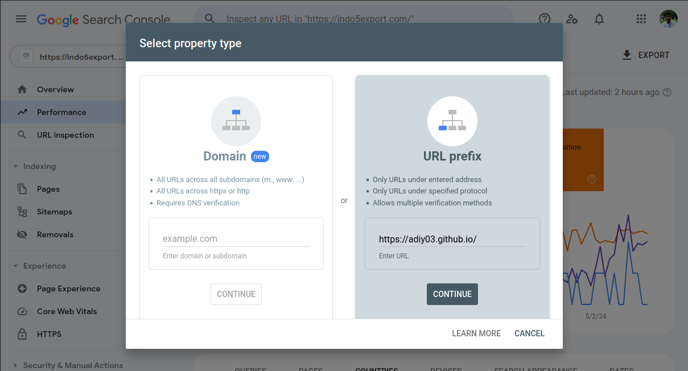
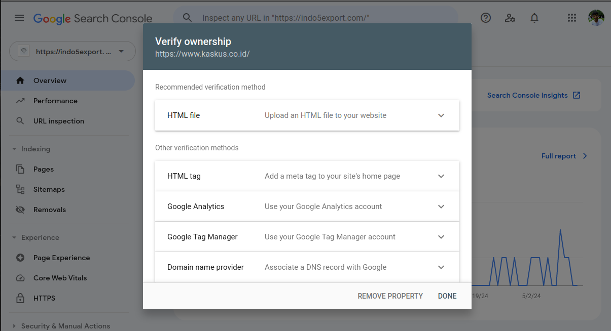
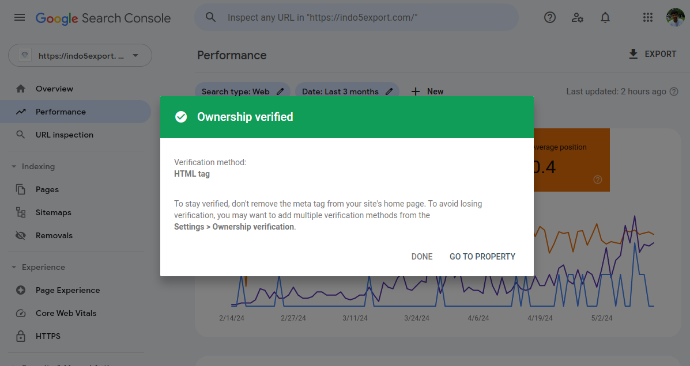
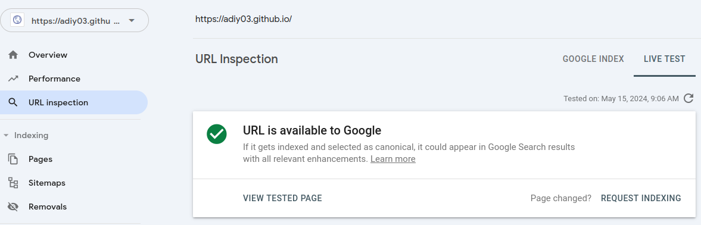

Google Search Console: Definisi, Manfaat dan Tutorial
Apa itu Google Search Console?
Google Search Console adalah alat gratis yang disediakan oleh Google untuk membantu pemilik situs web dan
profesional SEO untuk menghubungkan dan memastikan situs webnya tampil di halaman Google Search
Menurut situs resmi Google Search Console (GSC), GSC adalah Alat dan laporan yang membantu Anda
mengukur lalulintas kunjunan dan performa, menyelesaikan masalah situs web, dan membuat sistus
web Anda muncul pada halaman utama Google Search
Manfaat Google Search Console
Manfaat Google Search Console adalah memastikan situs web Anda tampil di halam pencarian Google ketika seseorang mengetikan "kata kunci" yang relevan dengan profile/bisnis/usaha Anda
Memiliki situs website saja tidak cukup,situs website Anda perlu terhubung dan ter-index dengan baik dengan cara menghubungkannya ke Gooogle Search Console,
Halaman situs yang tidak terhubung atau ter-index baik oleh Google tidak akan tampil di halaman Google Search ketika Ada seseorang yang mengetikan kata kunci yang relevan dengan Anda
Itu dia salah satu sebab kenapa situs web Anda tidak mendapatkan banyak lalu lintas kunjungan bahkan ketika situs web Anda sudah memiliki tampilan yang bagus
Google Search Console Tutorial
Berikut adalah langka-langkah pemanfaatan Google Search Console:
Menghubungkan Webiste dengan Google Search Console
- Miliki Website, Anda perlu untuk meiliki website untuk menghubungkan website Anda dengan Google Search Console
- Buka halaman Google Search Console di sini
- Klik tulisan "Start Now"
- Cari dan Klik Tulisan "Add Property"
- Gunakan Metode Verifikasi Yang Anda Inginkan "Select Property"
 - Anda akan dibawa ke pilihan cara memverifikasi kepemilikan situs web Anda
- Pilih metode verifikasi yang Anda inginkan
 - Ikuti langkah selanjutnya
- Bila Anda menemukan kesulitan kunjungi halaman bantuan di sini
- Bila Anda sudah berhasil maka akan menemukan notifikasi seperti ini
 - cari "URL Inspection" -> Isi URL halaman yang ingin Anda hubungkan ke Google Pencarian -> Test Live -> jika menemukan "URL is available to Google" -> Kemudia klik Request Indexing
 - Selamat, Anda berhasil menghubungkan halaman situs web Anda ke pencarian Google, sekarang situs web Anda dapat tampil jika Ada orang yang mengetikan "kata kunci" yang relevan dengan halaman website yang Anda buat
- Setelah terhubung, Anda dapat meningkatkan peringkat situs web Anda agar dapat menempati halaman hasil pencarian Google dengan mengiuti langkah-langkah di artikel berikut : asd
Konten GSC lainnya :